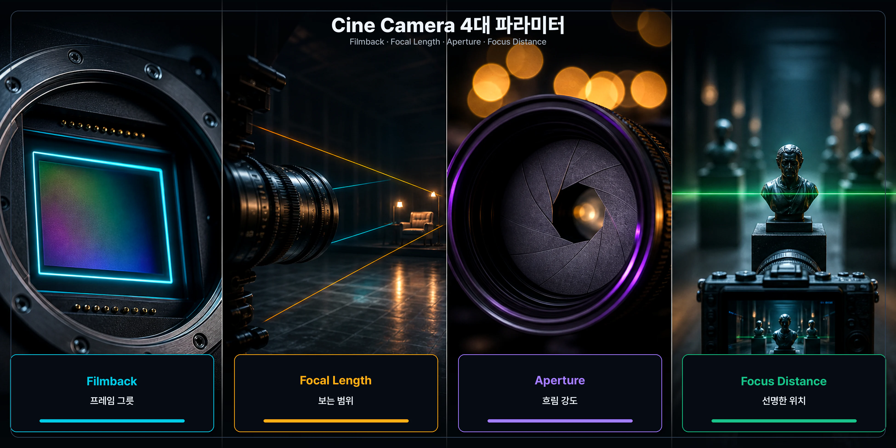
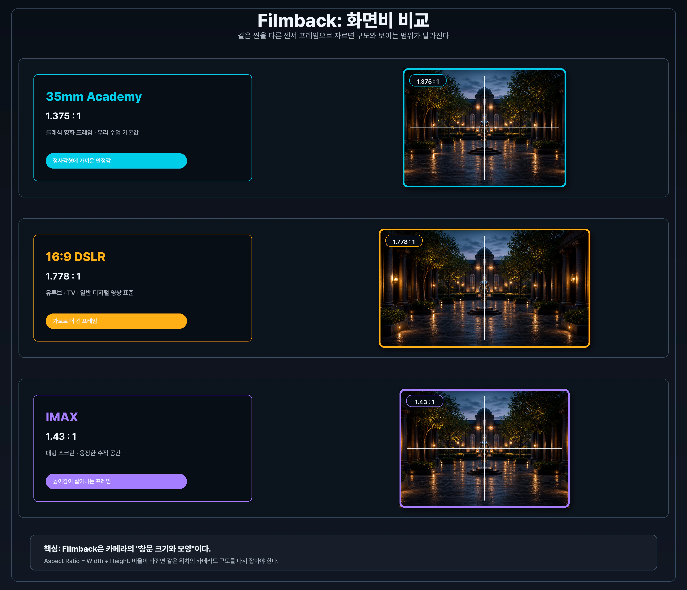
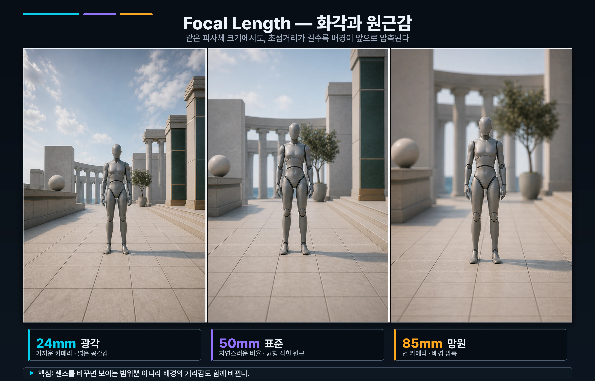
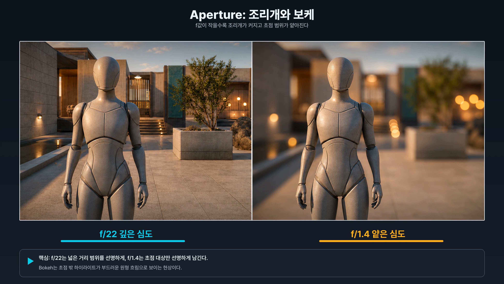
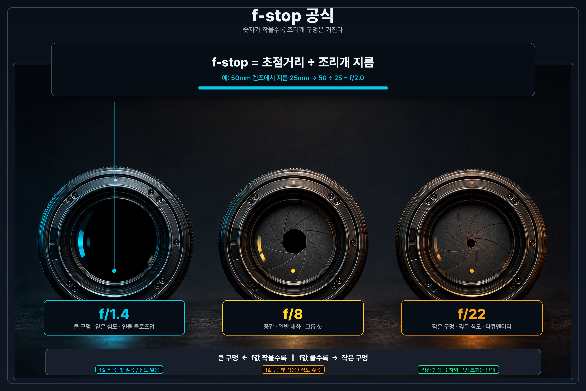
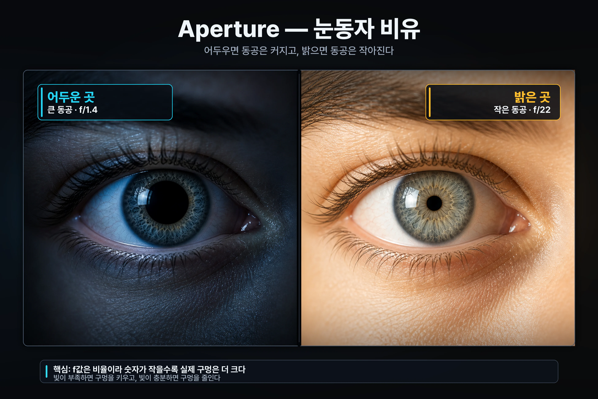
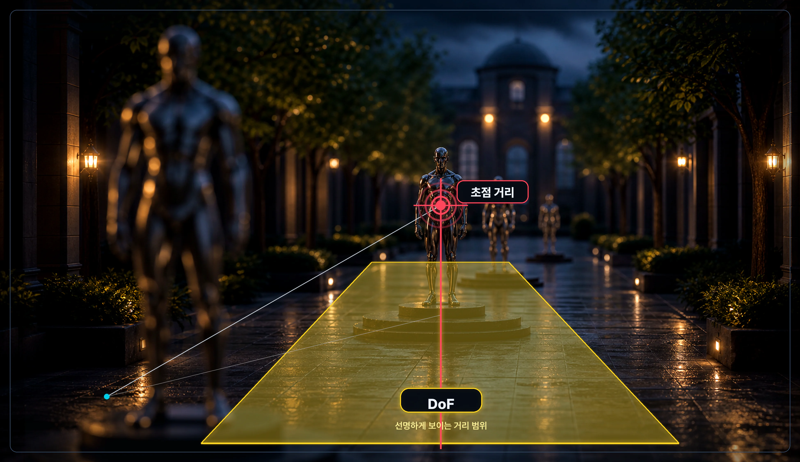

9주차 1교시 — 시네 카메라의 영화 언어 (학생용)
관련 문서
| 관계 | 문서 |
|---|---|
| 강의 계획서 | 강의계획서: Game Engine II |
| 강의 아웃라인 | 9주차 아웃라인: 시퀀서 기초 |
- 일반 Camera Actor와 Cine Camera Actor의 차이를 이해할 수 있다
- Cine Camera의 4대 파라미터(Filmback, Focal Length, Aperture, Focus Distance)를 직접 조작할 수 있다
- 같은 씬에서도 카메라 파라미터에 따라 영화적 룩이 어떻게 달라지는지 체감할 수 있다
영화 한 장면을 떠올려보면, 광각으로 찍은 풍경 샷과 망원으로 찍은 인물 클로즈업은 완전히 다른 느낌을 줍니다. 색감이나 분위기 이전에 카메라가 어떻게 세팅됐는가가 가장 큰 차이를 만들어냅니다.
5주차에 라이팅을 배울 때 간단히 만진 Camera Actor는 게임용 카메라입니다. 시점만 옮기는 용도라 영화에는 부족합니다. 오늘부터 6주차에 만든 본인 레벨을 실제 영화처럼 보이게 만드는 첫 단계로 시네 카메라(Cine Camera)를 배웁니다.
렌즈를 고른다는 건 "정교하게 찍자"가 아니라 관객이 무엇을 보게 할지 정한다는 의미입니다. 라이팅이 밝기로 시선을 유도한다면, 카메라는 프레이밍·심도·초점으로 시선을 유도합니다.
오늘 배울 4가지 — 한눈에 매핑

| 파라미터 | 한 줄 역할 |
|---|---|
| Filmback | 프레임의 그릇 — 화면 비율과 센서 크기 |
| Focal Length | 보는 범위 — 화각 (얼마나 넓게/좁게) |
| Aperture | 흐림의 강도 — 심도(배경이 얼마나 흐려지는가) |
| Focus Distance | 선명한 위치 — 어느 거리의 피사체에 초점이 맞는가 |
이 4개를 하나씩 직접 만져봅니다. 2교시에는 시간축에 키프레임으로 올리고, 3교시에는 본인 레벨에서 시네마틱 한 컷을 완성합니다.
1. 레벨 준비 + 두 카메라 비교
본인 6주차 레벨 열기
오늘 실습은 본인이 6주차에 만든 레벨에서 진행합니다.
- 1. 에디터 좌측 상단 File > Open Level 클릭
- 2. 본인 6주차 레벨 선택
- 3. 뷰포트에 환경이 보이는지 확인
6주차 레벨이 없거나 지나치게 단조로운 경우 메가스캔 에셋 한두 개를 임의로 배치해서 깊이감 있는 씬을 만들어두세요. 평지에서는 시네 카메라 효과가 잘 보이지 않습니다.
Camera Actor 배치 — 비교 대상
먼저 일반 Camera Actor를 하나 넣습니다. 게임플레이용 기본 카메라입니다.
- 1. Place Actors 패널 열기 (단축키 Shift+1 또는 Window > Place Actors)
- 2. 좌측 카테고리에서 Cinematic 클릭
- 3. Camera Actor를 뷰포트로 드래그
- 4. 카메라 액터를 선택한 상태로 에디터 우측 Details 패널 확인
Details 패널 옵션이 적습니다. FOV(시야각), Aspect Ratio(화면비) 정도가 전부입니다. 게임에서 캐릭터 시점이나 빠른 디버그용입니다.
Cine Camera Actor 배치 — 실제 주인공
같은 자리에 Cine Camera Actor를 넣습니다. 실제 영화 카메라처럼 렌즈, 센서, 초점, 조리개를 다루는 카메라입니다.
- 1. Place Actors 검색창에 "cine" 타이핑
- 2. Cine Camera Actor를 뷰포트로 드래그
- 3. 일반 Camera Actor 근처에 배치
- 4. Cine Camera Actor 선택 후 Details 패널 확인
Details 패널에 Filmback, Lens, Focus Settings 등 섹션이 훨씬 많습니다. 옵션이 많아 부담스러울 수 있지만 4개만 알면 충분합니다.
오늘은 노출이나 색, 후처리는 다루지 않습니다. 렌즈 언어만 먼저 익힙니다.
| 항목 | Camera Actor | Cine Camera Actor |
|---|---|---|
| 용도 | 게임플레이용 / 빠른 테스트 | 영화/시네마틱 |
| 주요 속성 | FOV(시야각), Aspect Ratio | Filmback, Focal Length, Aperture, Focus Distance |
| 심도(DoF) | 별도 설정 필요 | 기본 지원, 물리 기반 |
| 현실 카메라 대응 | 없음 | 실제 영화 카메라와 동일한 파라미터 |
| 사용 맥락 | 게임 캐릭터 시점, 디버그 뷰 | 시퀀서 컷 작업의 기본 |
9주차부터 시퀀서 카메라 작업에서는 Cine Camera Actor를 기본으로 사용합니다. 일반 Camera Actor는 오늘 비교용으로만 간단히 봤습니다.
카메라 시점 미리보기 — Pilot 모드
지금 뷰포트는 일반 시점입니다. 시네 카메라가 무엇을 보고 있는지 확인하려면 파일럿 모드로 들어가야 합니다. 뷰포트를 카메라의 눈으로 직접 조종하는 상태입니다.
방법 1 (가장 쉬움):
- 1. Outliner(에디터 우상단)에서 CineCameraActor 우클릭
- 2. Pilot 'CineCameraActor' 클릭
- 3. 뷰포트가 카메라 시점으로 전환됨
방법 2 (단축키): 시네 카메라 선택 후 Ctrl + Shift + P
해제: 뷰포트 좌상단 Stop Piloting 버튼 또는 다시 Ctrl + Shift + P
파일럿 모드에서 마우스 우클릭 + WASD로 시점을 움직이면 그게 카메라 위치/회전이 됩니다.
2. Filmback — 화면비 결정
Filmback은 카메라 센서 크기입니다. 화면비와 시야각이 여기서 결정됩니다. 비유하자면 카메라의 창문 크기와 모양입니다.
함께 실습 절차 — Filmback 5단계
작업 1 — Filmback 위치 찾기
- 1. Outliner에서 CineCameraActor 선택
- 2. Details 패널 검색창에 "filmback" 타이핑
Filmback 섹션이 나타납니다. 검색을 안 사용하면 위에서 스크롤하며 Camera Settings > Filmback을 찾습니다.
작업 2 — 35mm Academy 보기
- 1. Filmback 드롭다운 클릭
- 2. 35mm Academy (1.375 : 1) 선택
뷰포트 화면비가 1.375:1이 됩니다. 클래식 영화 비율로, 정사각형에 가까운 프레임입니다.
작업 3 — 16:9 DSLR로 변경
- 1. Filmback 드롭다운 → 16:9 DSLR (1.778 : 1) 선택
화면이 가로로 더 길어집니다. 유튜브, TV, 일반 디지털 영상의 표준 비율입니다.
작업 4 — IMAX로 변경
- 1. Filmback 드롭다운 → IMAX (1.43 : 1) 선택
다시 정사각형에 가까운 큰 프레임으로 바뀝니다. 〈덩케르크〉, 〈오펜하이머〉가 이 비율입니다.

작업 5 — 우리 수업용으로 통일
- 1. Filmback 드롭다운 → 35mm Academy 다시 선택
우리 수업 내내 35mm Academy로 갑니다. 한번 정하면 바꾸지 않는 게 좋습니다. 화면비가 바뀌면 구도를 다시 잡아야 하기 때문입니다.
Filmback 정리
| 프리셋 | 화면비 | 실무 감각 |
|---|---|---|
| 35mm Academy | 1.375 : 1 | 클래식 영화 프레임. 우리 수업 기본값 |
| 16:9 DSLR | 1.778 : 1 | 유튜브, TV, 일반 디지털 영상 |
| IMAX | 1.43 : 1 | 웅장한 대형 스크린, 〈덩케르크〉, 〈오펜하이머〉 |
| 속성 | 기본값 | 설명 | 조절 팁 |
|---|---|---|---|
| Filmback | 35mm Academy | 프리셋 선택 | 우리 수업은 35mm Academy 통일 |
| Sensor Width | 24.89 mm | 가로 센서 크기 | 프리셋 사용하면 자동 |
| Sensor Height | 18.67 mm | 세로 센서 크기 | 프리셋 사용하면 자동 |
| Sensor Aspect Ratio | 1.375 | Width ÷ Height로 자동 계산 | 표시용 |
16:9는 모양 비율이고, 1920×1080은 픽셀 수(해상도)입니다. 같은 16:9도 Full HD(1920×1080)일 수도 있고 4K(3840×2160)일 수도 있습니다.
아닙니다. 렌즈는 그대로고, 센서가 받아들이는 영역이 달라져서 보이는 범위가 변하는 것입니다.
| 증상 | 원인 | 해결 |
|---|---|---|
| Filmback 드롭다운이 보이지 않음 | Camera Actor를 선택했음 | Outliner에서 CineCameraActor 다시 선택 |
| 화면비가 안 바뀜 | 파일럿 모드 꺼짐 | Outliner에서 CineCameraActor 우클릭 → Pilot |
| 검색해도 Filmback이 안 나옴 | 검색 오타 또는 액터 미선택 | "filmback" 정확히 타이핑, 액터 재선택 |
3. Focal Length — 화각
Focal Length는 화각, '얼마나 좁게 보느냐'입니다. 줌과 비슷한 개념인데, 정확히는 렌즈의 화각을 정하는 값입니다. 시네 카메라에서 슬라이더를 움직이는 건 렌즈를 갈아끼는 것과 비슷합니다.
함께 실습 절차 — Focal Length 6단계
작업 1 — Focal Length 위치 찾기
- 1. Details 패널 검색창에 "focal" 타이핑
- 2. Current Camera Settings > Lens Settings > Current Focal Length 슬라이더가 나타남
검색을 안 사용하면 Lens Settings 섹션을 펼칩니다.
작업 2 — 24mm (광각) 입력
- 1. Current Focal Length 입력 칸에 24 입력
뷰포트가 넓게 보입니다. 광각이라 공간감이 큽니다. 풍경, 군중, 광활한 장면에 어울립니다.
작업 3 — 50mm (표준) 변경
- 1. Current Focal Length를 50으로 변경
화각이 좁아지고 사람 눈과 비슷한 자연스러운 시야가 됩니다. 일반 대화 컷에 어울립니다.
작업 4 — 85mm (망원) 변경
- 1. Current Focal Length를 85로 변경
화면이 더 좁아지고 피사체가 압축돼 보입니다. 인물 클로즈업에 어울립니다.

작업 5 — 광각 왜곡 체험
- 1. Current Focal Length를 다시 24로
- 2. 카메라를 핵심 액터(인물 또는 핵심 오브젝트)에 가까이 이동해서 화면을 채움
가까운 부위(코, 이마, 표면)가 과장돼 어색하게 부풀어 보입니다. 이게 광각 왜곡(Wide-angle distortion)입니다.
작업 6 — 원근 압축 체험
- 1. Current Focal Length를 85로 변경
- 2. 카메라를 뒤로 빼서 같은 액터를 멀리서 잡음
피사체가 자연스럽고 배경이 인물 가까이 압축돼 보입니다. 이게 원근 압축(Perspective compression)입니다. 영화 인물 클로즈업이 거의 다 85mm 이상인 이유입니다.
Focal Length 정리
| 화각 | Focal Length | 느낌 | 권장 사용 컷 |
|---|---|---|---|
| 광각 | 14–28mm | 넓음, 공간감, 왜곡 | 공간 소개, 액션 동선, 풍경 |
| 표준 | 35–50mm | 사람 눈과 유사 | 자연스러운 대화, 일반 컷 |
| 망원 | 70–135mm | 좁음, 압축감 | 인물 클로즈업, 감정 표현 |
| 초망원 | 200mm+ | 매우 좁음, 평면적 | 멀리 있는 피사체, 압축 미학 |
| 속성 | 기본값 | 설명 | 조절 팁 |
|---|---|---|---|
| Current Focal Length | 35.0 mm | 화각 결정 | 풍경: 24, 표준: 50, 인물: 85+ |
| Min Focal Length | 4.0 mm | 슬라이더 최소값 | 보통 안 건드림 |
| Max Focal Length | 1000.0 mm | 슬라이더 최대값 | 보통 안 건드림 |
| Lens Preset | Universal Zoom | 슬라이더 범위 결정 | Universal Zoom 그대로 |
광각으로 찍으면 코가 커 보이고, 망원으로 찍으면 얼굴이 정교하게 나옵니다. 같은 원리입니다. 멀리서 찍으니까 가까운 부위가 덜 과장되는 것입니다.
카메라 가까이 가는 것과 망원으로 당기는 것은 다릅니다. 가까이 가면 원근감이 변하고, 망원은 화각만 좁아집니다. 이건 3교시 Dolly Zoom에서 다시 만납니다.
| 증상 | 원인 | 해결 |
|---|---|---|
| 슬라이더가 움직이지 않임 | 값 직접 입력 필요 | 슬라이더 우측 숫자 칸 클릭 후 키보드 입력 |
| 85mm로 바꿨더니 지나치게 좁아 아무것도 보이지 않음 | 카메라가 피사체에 지나치게 가까움 | 우클릭 + S(뒤로)로 카메라를 멀리 |
| 24mm가 지나치게 넓어 산만함 | 광각의 정상 특성 | 표준 50mm로 시작 후 조절 |
4. Aperture — 조리개와 심도
Aperture는 조리개입니다. 빛 들어오는 구멍 크기인데, 우리는 심도(배경 흐림) 만드는 도구로 사용합니다.
시작 전 — Eye Adaptation 끄기
UE는 기본적으로 사람 눈처럼 자동 노출 보정(Eye Adaptation)을 합니다. Aperture를 f/22 → f/1.4로 바꿔도 화면 밝기가 거의 안 변할 수 있습니다.
배경 흐림(DoF) 자체는 Aperture에 직접 반응하므로 Eye Adaptation을 끄지 않아도 보입니다. Eye Adaptation이 가리는 건 brightness 변화뿐입니다. 다만 'f값 바꿔도 변화가 없는 것 같다'는 인지 혼란을 막기 위해 끄고 시작합니다.
Eye Adaptation 끄는 절차:
- 1. CineCameraActor 선택
- 2. Details 검색창에 "exposure" 타이핑
- 3. Post Process > Lens > Exposure 섹션 펼치기
- 4. Min EV100 = 1, Max EV100 = 1로 동일하게 입력
- 5. brightness가 freeze됨 → DoF 변화만 명확히 비교 가능
Cine Camera에는 Eye Adaptation 외에도 Bloom, Vignette, Color Grading 등 Post Process 옵션이 더 있습니다. 13주차 렌더링 수업에서 본격 다룹니다. 오늘은 이 한 가지만 짚고 갑니다.
함께 실습 절차 — Aperture 6단계
작업 1 — Aperture 위치 찾기
- 1. Details 패널 검색창에 "aperture" 타이핑
- 2. Current Aperture 슬라이더가 나타남
현재 값은 f/2.8 정도입니다. 화면 안의 배경 흐림 정도를 한 번 봐둡니다.
작업 2 — f/22 (조이기)
- 1. Current Aperture를 22로 입력
화면 모든 거리의 오브젝트가 다 선명해집니다. 다큐멘터리, 모든 게 선명한 룩입니다.
작업 3 — f/1.4 (활짝 열기)
- 1. Current Aperture를 1.4로 변경
이론상 배경이 흐려져야 하지만, 대부분의 학생은 화면 변화가 미미하거나 거의 없습니다. 이는 정상적인 상황입니다.
작업 4 — 심도 진단
f/1.4인데 배경이 안 흐려진 경우 다음 세 가지를 점검하고 하나씩 고칩니다.
| 원인 | 해결 |
|---|---|
| 카메라가 핵심 액터에서 지나치게 멈 | 우클릭 + W(앞으로)로 액터에 1m 이내까지 가까이 |
| Focal Length가 24mm 광각임 | Current Focal Length를 85로 변경 |
| 배경이 액터 바로 뒤에 붙어있음 | 카메라 각도를 바꿔 배경이 멀리 보이는 구도 만들기 |
작업 5 — 다시 시도 (조합 만들기)
- 1. f/1.4 + Focal Length 85mm + 카메라를 핵심 액터에 가까이
배경이 부드럽게 흐려집니다. 이게 Bokeh(보케)입니다. 영화 인물 클로즈업의 핵심 룩입니다.

작업 6 — 본인 레벨에서 가장 강한 Bokeh 찾기
- 1. 본인 레벨에서 Bokeh가 가장 잘 나오는 위치/각도 탐색
- 2. 카메라 위치, Focal Length, f값을 조합해 가장 마음에 드는 결과 만들기
Aperture 광학 원리
f값이 작을수록 구멍은 더 큽니다. 직관과 반대입니다. f-stop = 렌즈 초점거리 ÷ 조리개 지름 분모(조리개 지름)가 클수록 f값(분수의 결과)은 작아집니다. f/1.4가 활짝 열린 큰 구멍, f/22가 좁은 작은 구멍입니다.

비유로 말하면 사람 눈동자와 같습니다. 어두운 곳에 가면 동공이 커집니다. 빛을 많이 들이려고. 그게 f/1.4 상태입니다. 밝은 곳에 가면 동공이 작아집니다. 그게 f/22 상태입니다.

조리개가 작아지면 왜 심도가 깊어질까요? 구멍이 작을수록 빛이 좁은 경로로 들어와서 초점 앞뒤의 흐림 원이 작아집니다. 그래서 더 넓은 거리 범위가 선명해 보입니다.
Aperture 정리
| f값 | 조리개 상태 | 심도 | 권장 사용 컷 |
|---|---|---|---|
| f/1.4 | 활짝 열림 | 매우 얕음, 강한 Bokeh | 인물 클로즈업, 감정 강조 |
| f/2.8 | 열림 | 얕음 | 시네마틱 기본값 |
| f/5.6 | 중간 | 보통 | 일반 대화 장면 |
| f/8 | 좁음 | 깊음 | 풍경, 그룹 샷, 제품 컷 |
| f/22 | 매우 좁음 | 매우 깊음 | 다큐멘터리, 모든 게 선명 |
| 속성 | 기본값 | 설명 | 조절 팁 |
|---|---|---|---|
| Current Aperture | 2.8 | 조리개 f값 | 시네마틱: 1.4–2.8, 일반: 5.6–8 |
| Min FStop | 1.4 | 슬라이더 최소값 | 보통 안 건드림 |
| Max FStop | 22.0 | 슬라이더 최대값 | 보통 안 건드림 |
| Diaphragm Blade Count | 7 | 조리개 날 개수 (Bokeh 모양) | 7=둥근 Bokeh, 5=오각형. 기본 7 그대로 |
심도는 선명하게 보이는 거리 범위(얼마나 좁은가/넓은가)이고, Bokeh는 초점 밖 흐림의 모양과 질감입니다.
f/1.4~2.8이 영화 인물 클로즈업에서 자주 쓰이지만, 단체 컷이나 액션, 제품 컷에서는 일부러 f/5.6~8로 조여서 모두 선명하게 만듭니다. 고정 규칙은 아닙니다.
f값 작게 + Focal Length 길게 + 피사체 가까이 + 배경 멀리 네 가지가 같이 작동합니다. 다 만족시키면 Bokeh가 확 나옵니다.
5. Focus Distance — Manual / Tracking
들어가기 전에 꼭 짚어야 할 구분이 있습니다.
| 용어 | 의미 |
|---|---|
| Focus Distance | 가장 선명한 거리의 위치 (한 점) |
| Depth of Field (심도) | 그 위치 앞뒤로 선명하게 허용되는 범위 |

한 줄로, Focus Distance는 '어디에' 초점을 맞출지, DoF는 그 초점 주변이 '얼마나 넓게' 선명할지입니다. 둘이 같이 작동합니다. 초점이 안 맞으면 아무리 f값을 작게 해도 흐릿하기만 합니다.
Focus Distance는 cm 단위입니다. 200cm = 2m, 1000cm = 10m입니다.
함께 실습 절차 — Focus Distance 6단계
작업 1 — Focus 섹션 위치 찾기
- 1. Details 패널 검색창에 "focus" 타이핑
- 2. Focus Settings 섹션이 나타남
- 3. Current Focus Method 드롭다운이 핵심 옵션
기본값은 Manual입니다.
작업 2 — Manual 거리 200cm
- 1. Manual Focus Distance를 200으로 입력
카메라에서 2m 거리의 오브젝트가 선명해지고 나머지는 (조리개에 따라) 흐려집니다.
작업 3 — 거리 차례로 변경
- 1. Manual Focus Distance를 500 입력 → 5m 거리 오브젝트가 선명
- 2. 1000 입력 → 10m 거리 선명
- 3. 2000 입력 → 20m 거리 선명
거리값에 따라 선명 영역이 카메라에서 멀어지는 것이 보입니다.
작업 4 — Debug Plane 켜기 (시각화)
- 1. Draw Debug Focus Plane 체크박스 활성화
뷰포트에 노란색 평면이 나타납니다. 이 평면 위에 있는 물체만 선명해진다는 뜻입니다. 가상의 유리판이라고 보면 됩니다.
- 2. Manual Focus Distance를 다시 200, 500, 1000으로 바꾸면 노란 평면이 그 거리로 이동합니다.
작업 5 — Tracking 모드 시도
- 1. Current Focus Method 드롭다운 → Tracking 선택
- 2. 아래 Actor To Track 옵션이 새로 나타남
- 3. 드롭다운 또는 스포이드 아이콘 클릭 → 본인 레벨의 핵심 액터(메가스캔 식물, 바위 등) 선택
노란 Debug Plane이 자동으로 선택한 액터 위치로 이동합니다. 액터를 옮겨도 평면이 따라갑니다.
작업 6 — Debug Plane 끄기
- 1. Draw Debug Focus Plane 체크 해제
작업 중에는 Plane이 계속 보이면 방해될 수 있으므로 디버그용으로만 켰다 끕니다.
Focus Distance 정리
| 모드 | 사용 시점 | 연출 의미 |
|---|---|---|
| Manual | 카메라/피사체 움직이지 않임, 의도적 초점 고정 | Rack Focus (한 피사체 → 다른 피사체 초점 이동) |
| Tracking | 피사체나 카메라가 움직임 | 자동 추적, 캐릭터 따라가기 |
| Disable | 모든 게 다 선명해야 함 | 심도 연출 자체를 끔 |
| 속성 | 기본값 | 설명 | 조절 팁 |
|---|---|---|---|
| Current Focus Method | Manual | Manual / Tracking / Disable | 정적 컷: Manual, 움직임: Tracking |
| Manual Focus Distance | 100000 cm | Manual 시 초점 거리 | 200=2m, 1000=10m |
| Actor To Track | None | Tracking 시 따라갈 액터 | 본인 레벨의 핵심 오브젝트 |
| Draw Debug Focus Plane | 꺼짐 | 초점 평면 시각화 (가상 유리판) | 디버그용으로만 |
Manual의 실제 매력은 Rack Focus라는 영화 기법입니다. 한 피사체에서 다른 피사체로 초점을 이동해서 관객 시선을 옮기는 것입니다. 2교시에 키프레임으로 직접 만듭니다.
Tracking은 편하지만 Rack Focus처럼 의도적으로 초점을 늦게 맞추거나 다른 대상에 두려면 Manual이 필요합니다.
| 증상 | 원인 | 해결 |
|---|---|---|
| Tracking으로 바꿨는데 초점이 안 맞음 | Actor To Track이 None | 액터 지정 필요 |
| 액터 지정했는데도 흐릿함 | Aperture가 지나치게 좁음(f/22) | Aperture를 f/2.8 이하로 |
| 모든 게 다 선명함 | Focus Method가 Disable | Manual 또는 Tracking으로 |
6. 내 영화 룩 만들기 — 4 파라미터 통합 미션
지금까지 4 파라미터를 하나씩 따로 만져봤습니다. 이제 4개를 다 묶어서 본인 레벨에서 한 컷의 영화 룩을 직접 만듭니다.
미션 — 본인만의 영화 룩 한 컷 완성하기
조건 4가지 (4 파라미터 모두 사용):
- Filmback: 35mm Academy 고정
- Focal Length: 본인이 만들 룩에 맞는 화각 선택
- Aperture: 얕은 심도 또는 깊은 심도 중 의도에 맞게
- Focus Distance: Manual 또는 Tracking으로 핵심 액터에 초점 락
의도 카테고리 — 한 가지 골라서 만들기
| 카테고리 | 추천 조합 | 효과 |
|---|---|---|
| 인물 감정 클로즈업 | Focal 85+, f/1.4~2.0, 카메라 가까이, Tracking 액터에 락 | 강한 Bokeh, 인물 강조 |
| 공간 소개 와이드 | Focal 24~28, f/5.6~8, 카메라 멀리, Manual Focus 1000cm+ | 깊은 심도, 모든 게 선명, 공간감 |
| 드라마 대화 | Focal 50, f/2.8~4, Tracking 액터에 락 | 자연스러운 시야, 적당한 심도 |
| 압축 미학 | Focal 135+, f/2.8, 카메라 멀리, Tracking | 망원 압축, 배경 평면화 |
진행 절차
단계 1 — 의도 정하기 (30초)
- 옆 사람과 한 줄로 "나는 ___ 룩을 만들 거예요" 선언
- 또는 마음속으로만 정해도 됨
단계 2 — 파라미터 4개 설정 (3분)
- 위 표에서 의도에 맞는 조합 입력
- 카메라 위치/각도 잡기
단계 3 — 다듬기 (2분)
- 파일럿 모드에서 카메라 시점 확인
- 4 파라미터 미세 조정 (Focal Length, Aperture, Focus Distance)
- 만족스러운 화면 만들기
단계 4 — 옆 사람과 보여주기 (1분)
- 옆 사람과 1분씩 본인 화면 보여주기
- "내가 의도한 건 ___이고, ___ 파라미터로 ___을 만들었어요" 한 줄 설명
단계 5 — 진행 확인 (30초)
- 손 들면 빠르게 확인하고 한 줄 피드백
영화 룩이 무엇이 좋은가는 의도에 따라 달라집니다. 인물 클로즈업도 정답, 풍경 와이드도 정답입니다. 의도가 명확하고 파라미터가 그 의도를 받쳐주면 좋은 룩입니다.
완료되면 이대로 두세요. 2교시에 이 룩을 시간축에 올려서 키프레임으로 움직입니다.
정리
4대 파라미터 통합 표
| # | 파라미터 | 무엇을 바꾸는가 | 화면에서 어떻게 보이는가 | 실무 사용 |
|---|---|---|---|---|
| 1 | Filmback | 화면비 / 센서 크기 | 프레임 모양과 시야 범위 | 35mm Academy로 통일 |
| 2 | Focal Length | 화각 / 줌 | 좁게/넓게 보임, 원근 압축 | 풍경 24, 대화 50, 인물 85+ |
| 3 | Aperture | 조리개 (f값) | 심도 (배경 흐림 강도) | 시네마틱 1.4~2.8, 단체 5.6~8 |
| 4 | Focus Distance | 초점이 맞는 거리 | 어느 위치가 선명한가 | Manual: Rack Focus / Tracking: 추적 |
한 줄로 — Filmback은 프레임의 그릇, Focal은 보는 범위, Aperture는 흐림의 강도, Focus는 선명한 위치입니다.
심도 만들기 공식: 작은 f값 + 긴 Focal + 가까운 피사체 + 먼 배경. 이 넷이 같이 작동합니다.
2교시 예고
1교시는 시네 카메라 정지 화면이었습니다. 2교시에는 이 파라미터들을 시간축에 키프레임으로 올립니다.
예고 한 줄 — Dolly Zoom: 카메라를 이동시키면서 동시에 Focal Length를 반대로 변경해서, 피사체 크기는 유지되는데 배경 크기만 변하는 효과입니다. 히치콕이 〈현기증〉에서 처음 쓴 효과고, 3교시에 본인 레벨에서 직접 만듭니다.